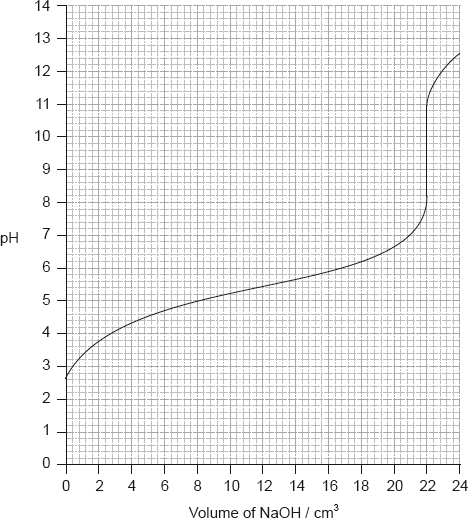

HL Paper 2
Chloroethene, C2H3Cl, is an important organic compound used to manufacture the polymer poly(chloroethene).
State an equation for the reaction of ethanoic acid with water.
Calculate the pH of \({\text{0.200 mol}}\,{\text{d}}{{\text{m}}^{ - 3}}\) ethanoic acid \(({\text{p}}{K_{\text{a}}} = 4.76)\).
Determine the pH of a solution formed from adding \({\text{50.0 c}}{{\text{m}}^{\text{3}}}\) of \({\text{1.00 mol}}\,{\text{d}}{{\text{m}}^{ - 3}}\) ethanoic acid, \({\text{C}}{{\text{H}}_{\text{3}}}{\text{COOH(aq)}}\), to \({\text{50.0 c}}{{\text{m}}^{\text{3}}}\) of \({\text{0.600 mol}}\,{\text{d}}{{\text{m}}^{ - 3}}\) sodium hydroxide, NaOH(aq).
(if acid added) \({\text{C}}{{\text{H}}_3}{\text{CO}}{{\text{O}}^ - } + {{\text{H}}^ + } \to {\text{C}}{{\text{H}}_3}{\text{COOH}}\);
(if alkali added) \({\text{C}}{{\text{H}}_3}{\text{COOH}} + {\text{O}}{{\text{H}}^ - } \to {\text{C}}{{\text{H}}_3}{\text{CO}}{{\text{O}}^ - } + {{\text{H}}_2}{\text{O}}\);
Explanation marks cannot be awarded without equations.
Water is an important substance that is abundant on the Earth’s surface.
Buffer solutions resist small changes in pH. A phosphate buffer can be made by dissolving \({\text{Na}}{{\text{H}}_{\text{2}}}{\text{P}}{{\text{O}}_{\text{4}}}\) and \({\text{N}}{{\text{a}}_{\text{2}}}{\text{HP}}{{\text{O}}_{\text{4}}}\) in water, in which \({\text{Na}}{{\text{H}}_{\text{2}}}{\text{P}}{{\text{O}}_{\text{4}}}\) produces the acidic ion and \({\text{N}}{{\text{a}}_{\text{2}}}{\text{HP}}{{\text{O}}_{\text{4}}}\) produces the conjugate base ion.
A \({\text{0.10 mol}}\,{\text{d}}{{\text{m}}^{ - 3}}\) ammonia solution is placed in a flask and titrated with a \({\text{0.10 mol}}\,{\text{d}}{{\text{m}}^{ - 3}}\) hydrochloric acid solution.
(i) State the expression for the ionic product constant of water, \({K_{\text{w}}}\).
(ii) Explain why even a very acidic aqueous solution still has some \({\text{O}}{{\text{H}}^ - }\) ions present in it.
(iii) State and explain the effect of increasing temperature on the value of \({K_{\text{w}}}\) given that the ionization of water is an endothermic process.
(iv) State and explain the effect of increasing temperature on the pH of water.
(i) Deduce the acid and conjugate base ions that make up the phosphate buffer and state the ionic equation that represents the phosphate buffer.
(ii) Describe how the phosphate buffer minimizes the effect of the addition of a
strong base, \({\text{O}}{{\text{H}}^ - }{\text{(aq)}}\), to the buffer. Illustrate your answer with an ionic equation.
(iii) Describe how the phosphate buffer minimizes the effect of the addition of a
strong acid, \({{\text{H}}^ + }{\text{(aq)}}\), to the buffer. Illustrate your answer with an ionic equation.
(i) Explain why the pH of the ammonia solution is less than 13.
(ii) Estimate the pH at the equivalence point for the titration of hydrochloric acid with ammonia and explain your reasoning.
(iii) State the equation for the reaction of ammonia with water and write the \({K_{\text{b}}}\) expression for \({\text{N}}{{\text{H}}_{\text{3}}}{\text{(aq)}}\).
(iv) When half the ammonia has been neutralized (the half-equivalence point), the pH of the solution is 9.25. Deduce the relationship between \({\text{[N}}{{\text{H}}_{\text{3}}}{\text{]}}\) and \({\text{[NH}}_4^ + {\text{]}}\) at the
half-equivalence point.
(v) Determine \({\text{p}}{K_{\text{b}}}\) and \({K_{\text{b}}}\) for ammonia based on the pH at the half-equivalence point.
(vi) Describe the significance of the half-equivalence point in terms of its effectiveness as a buffer.
Buffer solutions are widely used in both chemical and biochemical systems.
Describe the composition of an acidic buffer solution.
Determine the pH of a buffer solution, correct to two decimal places, showing your working, consisting of 10.0 g of \({\text{C}}{{\text{H}}_{\text{3}}}{\text{COOH}}\) and 10.0 g of CH\(_3\)COONa in \({\text{0.250 d}}{{\text{m}}^{\text{3}}}\) of solution. \({K_{\text{a}}}\) for \({\text{C}}{{\text{H}}_{\text{3}}}{\text{COOH}} = 1.8 \times {10^{ - 5}}\) at 298 K.
Bleaches in which chlorine is the active ingredient are the most common, although some environmental groups have concerns about their use.
In aqueous chlorine the equilibrium below produces chloric(I) acid (hypochlorous acid), HOCl, the active bleach.
\[{\text{C}}{{\text{l}}_2}{\text{(aq)}} + {{\text{H}}_2}{\text{O(l)}} \rightleftharpoons {\text{HOCl(aq)}} + {{\text{H}}^ + }{\text{(aq)}} + {\text{C}}{{\text{l}}^ - }{\text{(aq)}}\]
Aqueous sodium chlorate(I), NaOCl, the most common active ingredient in chlorine based bleaches, oxidizes coloured materials to colourless products while being reduced to the chloride ion. It will also oxidize sulfur dioxide to the sulfate ion.
The standard electrode potential for the reduction of the chlorate(V) ion to the chloride ion is \( + 1.49{\text{ V}}\).
(i) Describe the colour change that occurs when aqueous chlorine is added to aqueous sodium bromide.
(ii) Outline, with the help of a chemical equation, why this reaction occurs.
Chloric(I) acid is a weak acid, but hydrochloric acid is a strong acid. Outline how this is indicated in the equation above.
State a balanced equation for the reaction of chloric(I) acid with water.
Outline, in terms of the equilibrium in aqueous chlorine, why it is dangerous to use an acidic toilet cleaner in combination with this kind of bleach.
Suggest why a covalent molecule, such as chloric(I) acid, is readily soluble in water.
Partial neutralization of chloric(I) acid creates a buffer solution. Given that the \({\text{p}}{K_{\text{a}}}\) of chloric(I) acid is 7.53, determine the pH of a solution that has \({\text{[HOCl]}} = 0.100{\text{ mol}}\,{\text{d}}{{\text{m}}^{ - 3}}\) and \({\text{[Cl}}{{\text{O}}^ - }{\text{]}} = 0.0500{\text{ mol}}\,{\text{d}}{{\text{m}}^{ - 3}}\).
Describe, using HIn to represent the indicator in its acid form, why an indicator changes colour when excess alkali is added.
(i) Deduce a balanced equation for the reaction between the chlorate(I) ion and sulfur dioxide from the appropriate half-equations.
(ii) State the initial and final oxidation numbers of both chlorine and sulfur in the final equation.

(i) Define the term standard electrode potential.
(ii) Referring to Table 14 of the Data Booklet, deduce, giving a reason, whether the oxidation of the chromium(III) ion to the dichromate(VI) ion by the chlorate(V) ion is energetically feasible.
An equilibrium exists between nitrosyl chloride, NOCl, nitrogen oxide, NO, and chlorine, \({\text{C}}{{\text{l}}_{\text{2}}}\).
\[{\text{2NOCl(g)}} \rightleftharpoons {\text{2NO(g)}} + {\text{C}}{{\text{l}}_2}{\text{(g)}}\]
\({\text{20.0 c}}{{\text{m}}^{\text{3}}}\) of hexane, \({{\text{C}}_{\text{6}}}{{\text{H}}_{{\text{14}}}}\), and \({\text{20.0 c}}{{\text{m}}^{\text{3}}}\) of pentan-1-ol, \({{\text{C}}_{\text{5}}}{{\text{H}}_{{\text{11}}}}{\text{OH}}\), were placed separately into two closed containers at 298 K and allowed to reach equilibrium.
Ammonia is a weak base.
(i) Deduce the equilibrium constant expression for this reaction.
(ii) Explain the effect on the position of equilibrium and the value of \({K_{\text{c}}}\) when pressure is decreased and temperature is kept constant.
(iii) 2.00 mol of NOCl was placed in a \({\text{1.00 d}}{{\text{m}}^{\text{3}}}\) container and allowed to reach equilibrium at 298 K. At equilibrium, 0.200 mol of NO was present. Determine the equilibrium concentrations of NOCl and \({\text{C}}{{\text{l}}_{\text{2}}}\), and hence calculate the value of \({K_{\text{c}}}\) at this temperature.
(iv) The value of \({K_{\text{c}}}\) is \(1.60 \times {10^{ - 5}}\) at 318 K. State and explain whether the forward reaction is exothermic or endothermic.
(i) Compare the two liquids in terms of their boiling points, enthalpies of vaporization and vapour pressures.
(ii) Explain your answer given for part (b)(i).
Calculate the pH of a \({\text{1.50 mol}}\,{\text{d}}{{\text{m}}^{ - 3}}\) solution of ammonia at 298 K to two decimal places, using Table 15 of the Data Booklet.
A buffer solution is made using \({\text{25.0 c}}{{\text{m}}^{\text{3}}}\) of \({\text{0.500 mol}}\,{\text{d}}{{\text{m}}^{ - 3}}\) hydrochloric acid, HCl (aq), and \({\text{20.0 c}}{{\text{m}}^{\text{3}}}\) of \({\text{1.50 mol}}\,{\text{d}}{{\text{m}}^{ - 3}}\) ammonia solution, \({\text{N}}{{\text{H}}_{\text{3}}}{\text{(aq)}}\).
Describe the meaning of the term buffer solution.
Determine the pH of the buffer solution at 298 K.
A \({\text{1.50 mol}}\,{\text{d}}{{\text{m}}^{ - 3}}\) solution of ammonia is added to \({\text{25.0 c}}{{\text{m}}^{\text{3}}}\) of a \({\text{0.500 mol}}\,{\text{d}}{{\text{m}}^{ - 3}}\) hydrochloric acid solution in a titration experiment.
Calculate the total volume of the solution at the equivalence point.
Calculate the pH of the solution at the equivalence point, using Table 15 of the Data Booklet.
Identify a suitable indicator for this titration, using Table 16 of the Data Booklet.
A buffer solution with a pH of 3.87 contains \({\text{7.41 g}}\,{\text{d}}{{\text{m}}^{ - 3}}\) of propanoic acid, \({\text{C}}{{\text{H}}_{\text{3}}}{\text{C}}{{\text{H}}_{\text{2}}}{\text{COOH}}\), together with an unknown quantity of sodium propanoate, \({\text{C}}{{\text{H}}_{\text{3}}}{\text{C}}{{\text{H}}_{\text{2}}}{\text{COONa}}\).
Define the term buffer solution.
Explain, using appropriate equations, how this solution acts as a buffer solution.
Calculate the concentration, in \({\text{mol}}\,{\text{d}}{{\text{m}}^{ - 3}}\), of sodium propanoate in this buffer solution.
The \({\text{p}}{K_{\text{a}}}\) of propanoic acid is 4.87 at 298 K.
Acids can be described as strong or weak.
(i) Outline the difference in dissociation between strong and weak acids of the same concentration.
(ii) Describe three tests that can be carried out in the laboratory, and the expected results, to distinguish between \({\text{0.10 mol}}\,{\text{d}}{{\text{m}}^{ - 3}}{\text{ HCl(aq)}}\) and \({\text{0.10 mol}}\,{\text{d}}{{\text{m}}^{ - 3}}{\text{ C}}{{\text{H}}_{\text{3}}}{\text{COOH(aq)}}\).
Calculate the pH, using table 15 of the data booklet, of a solution of ethanoic acid made by dissolving 1.40 g of the acid in distilled water to make a \({\text{500 c}}{{\text{m}}^{\text{3}}}\) solution.
Determine the pH at the equivalence point of the titration and the \({\text{p}}{K_{\text{a}}}\) of an unknown acid using the acid-base titration curve below.

Identify, using table 16 of the data booklet, a suitable indicator to show the end-point of this titration.
Describe how an indicator, that is a weak acid, works. Use Le Chatelier’s principle in your answer.
State the formula of the conjugate base of chloroethanoic acid, \({\text{C}}{{\text{H}}_{\text{2}}}{\text{ClCOOH}}\).
Identify, with a reason, whether chloroethanoic acid is weaker or stronger than ethanoic acid using table 15 of the data booklet.
Determine the pH of the solution resulting when \({\text{100 c}}{{\text{m}}^{\text{3}}}\) of \({\text{0.50 mol}}\,{\text{d}}{{\text{m}}^{ - 3}}\) \({\text{C}}{{\text{H}}_{\text{2}}}{\text{ClCOOH}}\) is mixed with \({\text{200 c}}{{\text{m}}^{\text{3}}}\) of \({\text{0.10 mol}}\,{\text{d}}{{\text{m}}^{ - 3}}\) NaOH.
Describe how chlorine’s position in the periodic table is related to its electron arrangement.
\({\text{SC}}{{\text{l}}_{\text{2}}}\) and \({\text{SCl}}{{\text{F}}_{\text{5}}}\) are two sulfur chloride type compounds with sulfur having different oxidation states. Predict the name of the shape, the bond angle and polarity of these molecules.